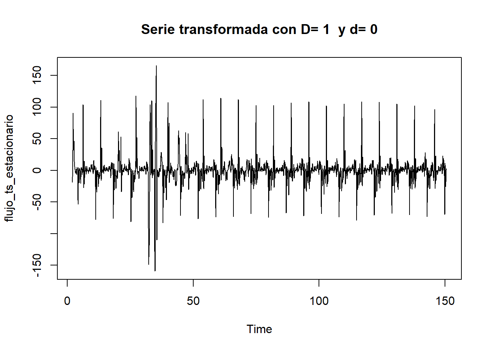
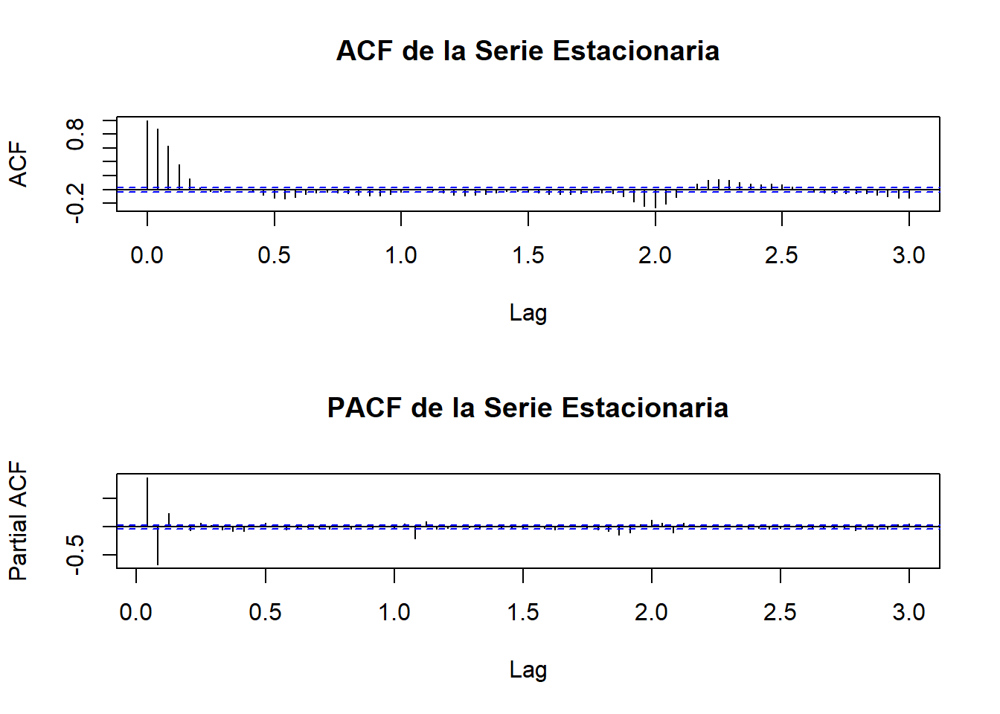

6 Capitulo 5
6.1 Modelo SARIMA (Metodología Box-Jenkins)
La metodología Box-Jenkins (Box & Jenkins, 1970) es un procedimiento iterativo para identificar, estimar y validar modelos ARIMA de la forma:
ARIMA(p,d,q)(P,D,Q)ₘ
Donde:
- (p,d,q): Órdenes no estacionales (autorregresivo, diferenciación, media móvil).
- (P,D,Q)ₘ: Órdenes estacionales con período m.
- m=24: Periodicidad estacional (24 horas).
6.1.1 Establecimiento de Órdenes de Diferenciación
Los capítulos anteriores establecieron que la serie requiere:
- D = 1: Diferenciación estacional para eliminar estacionalidad estocástica.
- d = 0: No se requiere diferenciación adicional (confirmado por test ADF, p=0.01).
La serie transformada Yₜ = ∇₂₄Xₜ = Xₜ - Xₜ₋₂₄ es estacionaria.
El primer paso de la metodología Box-Jenkins es transformar la serie para que sea estacionaria (media y varianza constantes).Los capítulos anteriores concluyeron que la serie requiere diferenciación estacional (\(D=1\), \(m=24\)) para eliminar la estacionalidad estocástica. También debemos verificar si se necesita diferenciación no estacional (\(d=1\)) para eliminar la tendencia.Utilizaremos la función auto.arima() con restricciones para que determine el orden de diferenciación óptimo, y luego lo confirmaremos manualmente.
## Número de diferenciaciones estacionales (D) recomendadas: 1## Número de diferenciaciones no estacionales (d) recomendadas: 0
## [1] "Prueba ADF sobre la serie transformada:"##
## Augmented Dickey-Fuller Test
##
## data: flujo_ts_estacionario
## Dickey-Fuller = -15.225, Lag order = 15, p-value = 0.01
## alternative hypothesis: stationaryUna vez que la serie es estacionaria, analizamos sus funciones de autocorrelación (ACF) y autocorrelación parcial (PACF) para identificar los órdenes $p, q, P, Q$5.Lags Estacionales (P, Q): Observar los lags múltiplos de \(m=24\) (es decir, 24, 48, 72…).Un pico significativo en el ACF en el lag 24 (y corte) sugiere un orden SMA (\(Q=1\)).Un pico significativo en el PACF en el lag 24 (y corte) sugiere un orden SAR (\(P=1\)).Lags No Estacionales (p, q): Observar los primeros lags (1, 2, 3…).Picos significativos en el ACF que se cortan sugieren un orden MA (\(q\)).Picos significativos en el PACF que se cortan sugieren un orden AR (\(p\)).

El análisis identifica fuertemente la estructura estacional como \((P,D,Q)_m = (1, 1, 0)_{24}\) (con \(d=0\) de la sección 7.2). La estructura no estacional es un ARMA(p,q) mixto.Un modelo candidato completo sería \(ARIMA(p, 0, q)(1, 1, 0)_{24}\).Dado que la identificación manual de \(p\) y \(q\) es ambigua, procederemos en la siguiente sección a utilizar auto.arima(). Esta función automatizada es ideal para estos casos, ya que puede probar eficientemente varias combinaciones de \(p\) y \(q\) (mientras le forzamos a usar nuestro \(D=1\) y \(P=1, Q=0\) identificados) para encontrar el modelo más parsimonioso según el AICc.
usaremos la función auto.arima() como un método robusto y automatizado para encontrar el mejor modelo. auto.arima() busca iterativamente el modelo con el menor AICc (Criterio de Información de Akaike Corregido), manejando la selección de \(p,d,q,P,D,Q\) automáticamente.Forzaremos \(D=1\) y \(d=0\) y \(m=24\), permitiendo que el algoritmo encuentre los mejores \(p,q,P,Q\).
## Series: flujo_ts
## ARIMA(2,0,2)(2,1,0)[24]
##
## Coefficients:
## ar1 ar2 ma1 ma2 sar1 sar2
## 1.1111 -0.3825 0.5428 0.2583 -0.2071 -0.2073
## s.e. 0.0359 0.0314 0.0368 0.0283 0.0171 0.0165
##
## sigma^2 = 52.93: log likelihood = -12143.32
## AIC=24300.65 AICc=24300.68 BIC=24343.91
##
## Training set error measures:
## ME RMSE MAE MPE MAPE MASE
## Training set 0.05073938 7.244866 4.360016 -1.666478 8.575633 0.3840569
## ACF1
## Training set -0.001711128## AICc (ETS, A,Ad,N): 48015.22## AICc (ETS, AAA): 49450.94## AICc (SARIMA): 24300.68